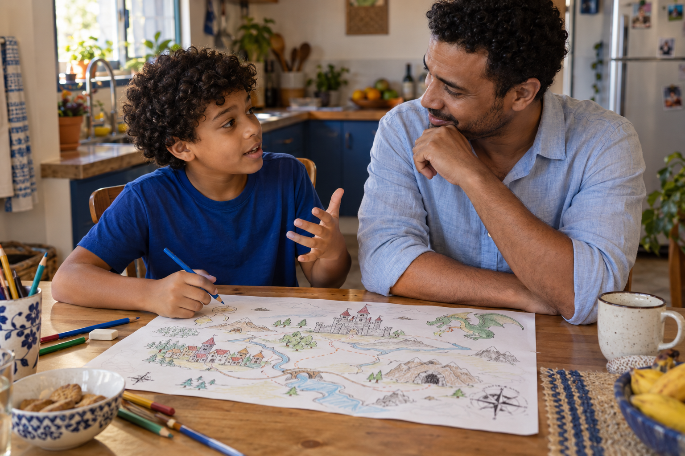
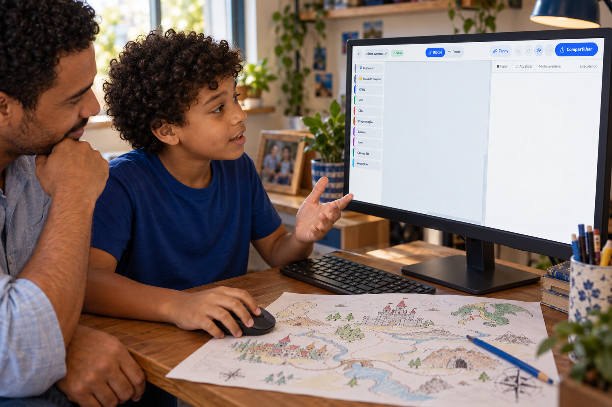
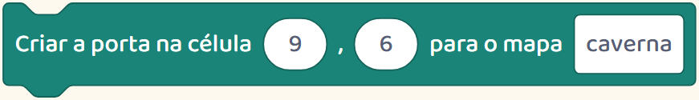
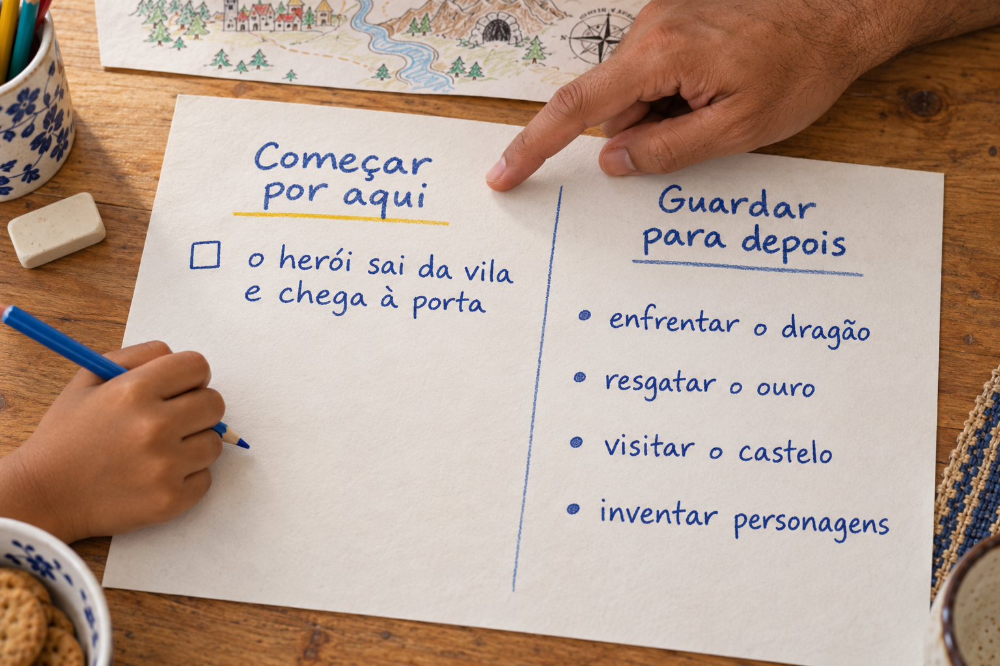

Por trás do jogo
Ele imaginou o jogo inteiro.
Na hora de começar, ficou sem saber o que fazer primeiro.

Ele imaginou o jogo inteiro.
Na hora de começar, ficou sem saber o que fazer primeiro.

Ouça a ideia dele: personagens, lugares e o que deve acontecer.

Depois escolham uma primeira cena para construir.
Criar um jogo envolve várias tarefas. Algumas precisam funcionar antes de outras.
Veja a ordem desta aventura que montamos.
Primeiro, o herói conversa com o ferreiro e recebe uma chave.
Essa conversa é uma parte que dá para construir e testar.
Quando o herói recebe a chave, a porta da caverna aparece.

Agora o teste é conferir se a chave faz a porta aparecer como planejado.
Para organizar o jogo dele, façam duas listas: “Começar por aqui” e “Guardar para depois”.

Na primeira, coloquem uma cena. Na segunda, as outras ideias.
Testem a primeira cena antes de acrescentar outra.
Se o personagem já faz o que vocês combinaram, escolham a próxima parte da lista.
A ideia pode continuar grande. A primeira tarefa pode ser pequena.
Siga @criecomhelenaejulio para ver como ajudamos crianças a transformar ideias em jogos.